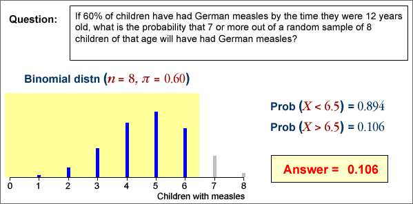

Assumptions underlying the binomial distribution
Evaluating binomial probabilities
They may be obtained using ...
A range of counts
Finding the probability that the number of successes is within an interval involves adding the binomial probabilities for all integer values in the interval.
Think carefully about the wording of the interval — does it include the values at the end? Adding or subtracting 1/2 to the endpoints of the interval makes it clearer. (This is also particularly useful when using the normal approximations that are described in the following pages.)
| In words... | In terms of X | Using 1/2 |
|---|---|---|
| More than 5 | X > 5 | X > 5.5 |
| Greater than or equal to 5 | X ≥ 5 | X > 4.5 |
| No more than 5 | X ≤ 5 | X < 5.5 |
| At least 5 | X ≥ 5 | X > 4.5 |
| Fewer than 5 | X < 5 | X < 4.5 |
| 5 or fewer | X ≤ 5 | X < 5.5 |
The following example illustrates the use of 1/2 in this way.
